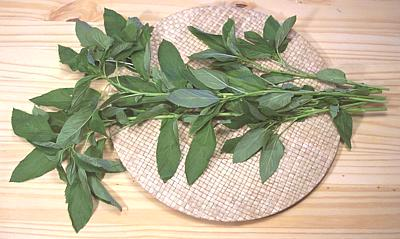

Molokhiya

[Egyptian Spinach, Okra Leaf, Mallow Leaf, Jew's Mallow; Saluyot
(Philippine); Molokhia, Mulukhiyah (Arab); Ewedu (Yoruba); Ayoyo (Hausa,
Fulbe); Kerenkere (Igbo); Malta Sag (India); Bai po (Thai);
T. Corchorus olitorius (Middle East, Africa, South & Southeast
Asia) | Corchorus capsularis (Japan, China),
both of subfamily Grewioideae]
Fiber of mature molokhiya plants is known as Jute, but for use as food the
plant is picked young and cooked as greens. While thought native to India,
it has been the most important green in Egyptian cooking since ancient times.
Consequently, it's available frozen in stores serving Near Eastern
communities In season (Summer months), it's available fresh in Southern
California, sold as "Okra Leaf". In Egypt leaves are also dried (they are
thin and dry quickly) and are crumbled into a powder for use in teas and
soups.
The leaves are quite mucilaginous when cooked. Most Americans would
consider them "slimy", but in North Africa and the Levant the effect is
much liked. In these regions the most common use is in Chicken stews,
particularly with rice.
More on Mallows.
Buying:
Fresh molokhia is usually sold in Southern
California as "Okra Leaf", which it is not. Okra leaves are broad with
a fingered shape. It is now quite common here in Southern California in
markets that serve a Near Eastern, Indian or Philippine community (we
have a lot of all of those). The leaves are thin and wilt very quickly
so buy them last and get them home and into the fridge immediately to
keep them from getting dried edges.
If they have become wilted you can refresh them by cutting the stem
ends as for cut flowers, then float the entire fronds in cold water for
an hour or so. Just sticking the cut ends in water does no good at all.
Frozen Malokhia can also be found in Philippine markets and markets
serving a Levantine or North African community.
Prep:
To use, pick off the leaves and wash them. If you
will be storing them for a while give them a good spin in your salad
spinner, then wrap loosely and refrigerate. You can also use the tender
tips of thick stalks (even thin ones are fibrous). Bite into the
left-over end and if it's fibrous you cut too far down.
Freezing:
Prep leaves as above. Bring plenty of water to
a full boil in a fairly large pot over highest heat. Pour in the leaves
and keep them submerged by poking down with a wooden spoon. As soon as
the water is back to a boil, measure 1-1/2 minutes. Drain. Bag with water
to prevent freezer burn.
Cooking:
Molokhia is most often chopped small or rolled
and shaved into threads to bring out its mucilaginous qualities, which
are much desired in Levantine and Egyptian cooking. It is then added to
soups a few minutes before serving. Whole leaves are used in Borani
recipes.
Frozen molokhia is almost always already chopped fine. It is generally
added to soup while still frozen and stirred a little until completely
thawed and the soup is back to a simmer.
mw_molokz 080907 - www.clovegarden.com
©Andrew Grygus - agryg@clovegarden.com - Photos
on this page not otherwise credited © cg1
- Linking to and non-commercial use of this page permitted